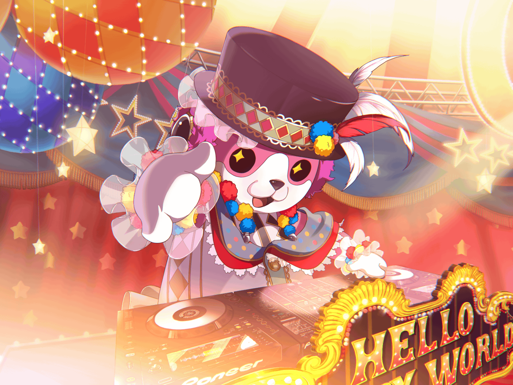

ミッシェル
あ、お疲れ様です
ミッシェル
よいしょっと……
美咲
よくミッシェル脱ぐ前なのに、あたしだってわかりましたね？
美咲
……え？ 当たり前？？
美咲
……そうですよね。
やっぱりミッシェル着てなくても、
あたしだってわかりますよね？
美咲
……ですよね。
ミッシェルの中身があたしだってことぐらい、わかりますよね
美咲
なのに、あの３バカは……はぁ……
美咲
あ、いえ、
別にそんな深刻な話というわけじゃないんですけど……
美咲
ただ単に、あの３バ……
こころと薫さんとはぐみが、全然理解してくれなくて
美咲
いつだったか、ミッシェル姿のまま、スタジオ入ったときに……
美咲
終わったあと、
暑かったからミッシェルの頭を外したんですよ
美咲
そうしたら、
あの３人が大騒ぎしだしたんです
美咲
ミッシェルの中から女の子が出てきた！ って……
美咲
呆れちゃいますよねー。
何回説明しても、理解してくれないんですよ
美咲
ミッシェルはキグルミ、
その中に入ってるのがあたしだってことに
美咲
そもそもキグルミの中に人が入ってるって、
思ってもないんでしょうね……
美咲
ホント、あの３人の思考回路は不明です……
美咲
花音さんはきちんと理解してくれてるし、
こころ達にも、あたしがミッシェルだって
言ってくれるんですけど……
美咲
もちろん、あなたも理解してくれてますし……
美咲
うーん、やっぱりあの３人はわかんないです
美咲
ま、最近は理解させようって思うことも、
なくなりつつありますしね
美咲
だってあたしがミッシェルの頭を脱いだ日、
ミッシェルと女の子が入れ替わったなんて言い出したんですよ？
美咲
で、本物のミッシェルを探さなきゃって騒ぎになって……
３バカはそのままスタジオ出ていったんです
美咲
当然、見つかりませんよね。
本物のミッシェルなんて
美咲
本物もなにも、あたしがミッシェルを着てる状態でしたから
美咲
と、いうわけでミッシェルを着ていないあたしが何者なのか、
あの３人はわかってないんです
美咲
こころなんて同じクラスなのにもかかわらず、
『あなた、誰だったかしら？』だなんて、
未だに時々平気で言うんですよ……
美咲
ライブの会議に参加しても、
ミッシェルの代理できたみたいな扱いで……
美咲
……って、愚痴ばっかりですね。
すみません
美咲
別に嫌なわけじゃないんですよ。
理解できないのが３バカなんで
美咲
むしろ、あの３人が理解したら……
なんていうか、
ハロハピのアイデンティティーが崩れるっていうか……
美咲
あたしがミッシェルだって認識したら、
なんか、それはそれで違うような気がしません？
美咲
最近はもう理解してもらえないのも慣れたし、
あたしはこのままでいいような気がして……
美咲
花音さんはまだ諦めずに、伝えてくれてますけどね
美咲
それに……あの３人が理解してくれないおかげで、
ライブ中はミッシェルになりきれるんです
美咲
奥沢美咲じゃなくて、ハロハピのミッシェルに
美咲
……たぶん、あたしのままだったら、
ステージでＤＪなんてできないですしね
美咲
……うん、考えただけで無理ですね
美咲
ミッシェルを着てる状態だから、
あたしはステージに立てるんです
美咲
そう考えると３バカに感謝してもいいような気が……
美咲
いやいやいや、あの３バカさえいなければ、
あたしはそもそもバンドに入ることもなく、
今まで通りの生活が送れてて……
美咲
……なんて言うのは卑怯ですね
美咲
最初は確かになりゆきで参加してたけど、
今はそれなりにバンド活動も……
美咲
ええ、悪くないですよ。
ライブ会議も、ライブそのものも
美咲
もちろん、
大変なことの方が、多いんですけどね
美咲
でも、その大変さが気にならないぐらい、
ライブに夢中というか……まあ、そんな感じです
美咲
こころの言う、世界を笑顔にって言葉も、
ちょっとだけですけど、
最近じゃ実現できるんじゃないかって思ってますし…
美咲
……なんか、だいぶこころに影響されてるような気がします
美咲
悪いことじゃないんでしょうけど
美咲
まぁ、なんだかんだ色々あったし、
これからもあるだろうけど……
美咲
あたしはあたしなりにやっていきますよ
美咲
たとえ、ミッシェルがあたしって理解されなくても
美咲
少なくとも花音さんは認識してくれてますし、
あなたにも認識されてるならそれでいいです
美咲
さすがにライブハウスの関係者にまで理解してもらえなかったら、
それはそれでキツイですしね
美咲
色々、不都合もありますし……
美咲
……って、ずいぶん長いこと話しちゃってすみません
美咲
ライブ終わりの挨拶だけのつもりが……
美咲
まだ、お仕事残ってますよね？
お時間いただいてすみませんでした
美咲
では、あたしはこれで失礼しますね
美咲
メンバーに話せないこと話せて、すっきりしました。
ありがとうございます
美咲
それじゃあ、またライブのときにはお世話になります
美咲
今日はお疲れ様でした